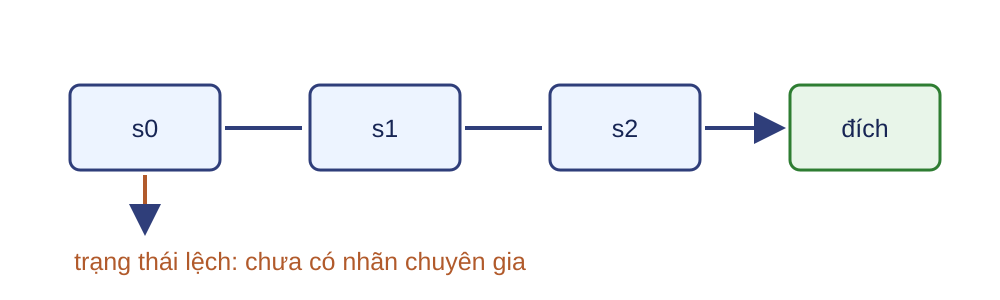
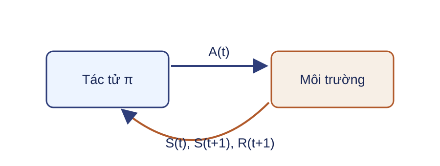
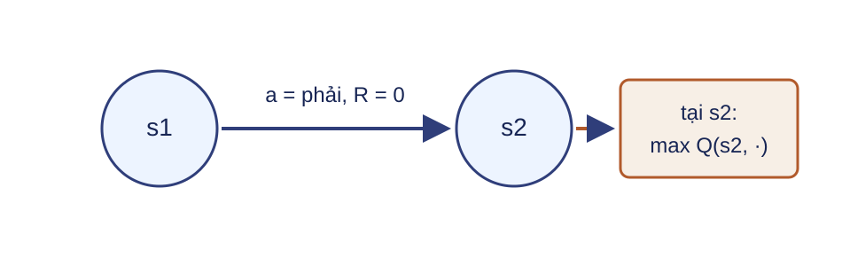
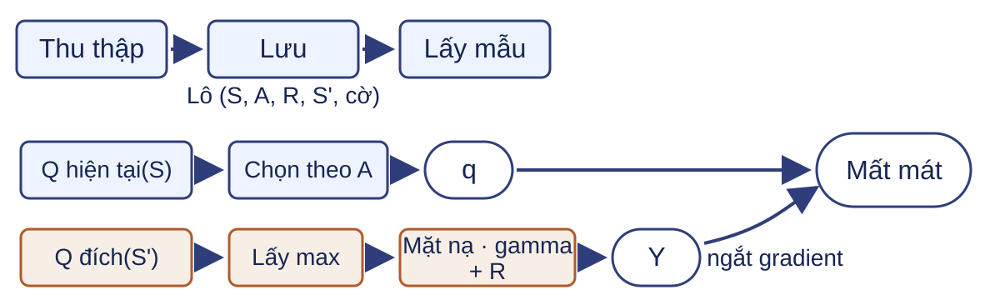

Học tăng cường và học bắt chước Bài 13 · Học sâu Một chính sách phải hành động trên những trạng thái do chính nó tạo ra.
Bài bắt đầu bằng dữ liệu chuyên gia, theo lỗi khi chính sách tự vận hành, rồi xây tín hiệu học từ phần thưởng đến DQN.Nguồn: DOCX, Buổi 13; CS285 L02, PDF 8–39.
Kết quả học tập LLO26 Trình bày tác tử, môi trường, trạng thái, hành động và phần thưởng.
LLO27 Phân biệt học tăng cường với học bắt chước.
Nội dung kỹ thuật bắt buộc: giá trị Q, Q-learning, mạng Q sâu (Deep Q-Network, DQN).
Tiên quyết: xác suất có điều kiện, kỳ vọng, đạo hàm, entropy chéo, hồi quy và tensor theo lô.
Sản phẩm là một mất mát sao chép hành vi, một đích Bellman, một cập nhật Q và một lô DQN đúng kích thước.Nguồn: DOCX, Buổi 13.
Một hành lang nối hai cách học 
Chuyên gia: $s_0\xrightarrow{\rightarrow}s_1\xrightarrow{\rightarrow}s_2\xrightarrow{\rightarrow}$ đích.
Cùng hành lang được dùng cho dữ liệu trình diễn, lệch phân phối, lợi tức, giá trị Q và lô DQN.Nguồn: mạch từ CS285 L02, PDF 8–39; ví dụ tự dựng.
Trình diễn là một quỹ đạo trạng thái–hành động $\tau^E=(S_0,A_0,R_1,S_1,\ldots,A_{T-1},R_T,S_T)$
Trong hành lang: $(s_0,\rightarrow),(s_1,\rightarrow),(s_2,\rightarrow)$; $S_T$ là trạng thái cuối.
Chỉ số E đánh dấu chuyên gia. Chữ hoa $S_t,A_t,R_{t+1}$ là biến ngẫu nhiên; chữ thường $s_i,a_i^E$ là giá trị cụ thể quan sát được. Mỗi hành động $A_t$ sinh phần thưởng $R_{t+1}$ và trạng thái $S_{t+1}$; không có $A_T$ trong quỹ đạo dài T bước.Nguồn: CS285 L02, PDF 8–12.
Tập dữ liệu bắt chước lấy nhãn từ chuyên gia $\mathcal D_E=\{(s_i,a_i^E)\}_{i=1}^{M}$
Đầu vào: trạng thái hoặc quan sát.
Nhãn: hành động chuyên gia.
Chữ hoa $S,A$ là biến ngẫu nhiên; chữ thường $s_i,a_i^E$ là giá trị cụ thể trong tập dữ liệu. Các cặp trong cùng quỹ đạo phụ thuộc theo thời gian; ký hiệu tập dữ liệu không ngụ ý độc lập thật sự.Nguồn: CS285 L02, PDF 8–14; Illinois L12, PDF 1–8.
Sao chép hành vi là học có giám sát $$\mathcal L_{BC}(\theta)=-\frac1M\sum_{i=1}^{M}\log\pi_\theta(a_i^E\mid s_i).$$
$M$ là số cặp trong tập dữ liệu. Một lô $B$ mẫu cho điểm chưa chuẩn hóa kích thước $B\times D_a$; entropy chéo tính theo trục hành động.
Sao chép hành vi (behavioral cloning, BC) khớp phân phối hành động của chuyên gia trên các trạng thái trong dữ liệu. Phân biệt kích thước toàn bộ tập $M$ với kích thước lô $B$.Nguồn: CS285 L02, PDF 12–18.
Chính sách xuất phân phối hành động $\pi_\theta(\cdot\mid s)=[.05,.95]$ cho hai hành động (trái, phải)
Câu hỏi: Hành động chuyên gia là “phải”. Mất mát giảm khi xác suất nào tăng?
$\pi_\theta(\rightarrow\mid s)$ tăng (thành phần thứ hai của $[.05,.95]$).
Phân phối theo thứ tự (trái, phải): $[.05,.95]$. Giữ lõi ở hành động rời rạc để nối thẳng với hành lang. Hành động liên tục được đưa xuống phụ lục X01.Nguồn: CS285 L02, PDF 12–19.
Đánh giá phải chạy chính sách trong môi trường Huấn luyện Khớp trên $\mathcal D_E$; mô hình ở chế độ huấn luyện.
Đánh giá Chạy một quỹ đạo vận hành, tắt gradient; báo tổng phần thưởng mỗi lượt.
Mất mát trên dữ liệu chuyên gia không thay thế đánh giá quỹ đạo vận hành (rollout). Tách quỹ đạo huấn luyện, kiểm định và kiểm tra theo giao thức dữ liệu. Lợi tức được định nghĩa chính thức ở L13-19.Nguồn: CS285 L02, PDF 19–24; làm rõ chế độ triển khai.
Học tăng cường học từ phần thưởng và tương tác Học bắt chước Học tăng cường Tín hiệu Hành động chuyên gia Phần thưởng từ môi trường Dữ liệu Trình diễn có sẵn Chuyển tiếp do chính sách thu thập Mục tiêu Khớp chính sách chuyên gia Tối đa hóa lợi tức kỳ vọng
Câu hỏi: Nếu chỉ có hành động chuyên gia, nên bắt đầu học bằng cách nào? Nếu chỉ có phần thưởng và quyền tương tác thì sao?
Học tăng cường (reinforcement learning, RL) không nhận phần thưởng như một nhãn hành động. BC và RL có thể được kết hợp, nhưng trang này chỉ khóa nguồn tín hiệu của từng cách học.Nguồn: DOCX, Buổi 13.
Tác tử và môi trường tạo một vòng tương tác 
Dùng quy ước phần thưởng $R_{t+1}$ sinh sau hành động $A_t$. Không đổi sang $R_t$ ở các trang sau.Nguồn: giáo trình, PDF 335–338.
Hành lang trở thành các chuyển tiếp $S_t$ $A_t$ $R_{t+1}$ $S_{t+1}$ $s_0$ phải 0 $s_1$ $s_1$ phải 0 $s_2$ $s_2$ phải 1 đích
Nhận diện năm thành phần và chính sách trước khi viết MDP Câu hỏi: Trong hành lang, đâu là tác tử, môi trường, trạng thái, hành động, phần thưởng và chính sách?
Robot; hành lang; vị trí; trái/phải; 1 tại đích; quy tắc chọn hành động.
Năm thành phần đầu kiểm trực tiếp LLO26. Chính sách là nội dung bài nhưng thuộc tác tử, không phải một thành phần của tuple MDP ở trang sau.Nguồn: DOCX, Buổi 13; giáo trình, PDF 335–338.
Quá trình quyết định Markov mô tả môi trường $\mathcal M=(\mathcal S,\mathcal A,P,r,\gamma,\rho_0)$
$P(s'\mid s,a)$: xác suất chuyển trạng thái
$R_{t+1}=r(S_t,A_t,S_{t+1})$: phần thưởng xác định
$S_0\sim\rho_0$; $\gamma\in[0,1]$
Chính sách riêng: $A_t\sim\pi(\cdot\mid S_t)$
Quá trình quyết định Markov (Markov decision process, MDP) mô tả môi trường; trang này dùng hàm thưởng xác định theo chuyển tiếp. Chính sách mô tả cách tác tử chọn hành động. Trên slide: $\gamma\in[0,1]$; $\gamma=1$ chỉ hợp lệ khi lợi tức hữu hạn (chân trời hữu hạn). Với chân trời vô hạn, lợi tức có thể phân kỳ nên thường chọn $\gamma<1$.Nguồn: giáo trình, PDF 335–338.
Trạng thái Markov chứa đủ thông tin cho bước kế tiếp $\Pr(S_{t+1},R_{t+1}\mid S_{0:t},A_{0:t})=\Pr(S_{t+1},R_{t+1}\mid S_t,A_t)$
Nếu vị trí chưa đủ dự đoán chuyển động, thêm vận tốc vào trạng thái.
Ký hiệu $\Pr$ là xác suất điều kiện, khác kernel chuyển trạng thái $P(s'\mid s,a)$ ở trang trước. Không đồng nhất quan sát cảm biến với trạng thái Markov.Nguồn: giáo trình, PDF 335–338.
Lợi tức cộng phần thưởng còn lại của quỹ đạo $$G_t=\sum_{k=0}^{\infty}\gamma^kR_{t+k+1}.$$
Câu hỏi: Với phần thưởng $(0,0,1)$ và $\gamma=.9$, hãy tính $G_2,G_1,G_0$.
$G_2=1$, $G_1=.9$, $G_0=.81$.
Cho sinh viên tính trước khi hiện đáp án. Chỉ số $R_{t+k+1}$ khớp vòng tương tác. Sau trạng thái kết thúc thật, mọi phần thưởng tiếp theo bằng 0, nên tổng vô hạn rút về tổng hữu hạn trên phần còn lại của lượt.Nguồn: giáo trình, PDF 335–339.
Kết thúc thật kết thúc MDP $D^{term}$: cờ kết thúc thật
Ý nghĩa: MDP đã kết thúc.
Phần lợi tức còn lại: bằng 0.
Câu hỏi: Khi $D^{term}_{t+1}=1$, phần lợi tức còn lại của lượt có ý nghĩa gì?
Bằng 0: sau kết thúc thật không còn phần thưởng nào để cộng.
Kết thúc thật nghĩa là MDP đã dừng: phần lợi tức còn lại bằng 0. Hợp đồng dữ liệu phải lưu cờ kết thúc thật riêng; khi cờ bật, hạng giá trị tương lai trong đích bị triệt.Nguồn: giáo trình, công thức 12.24; Illinois, Algorithm 1.
Giá trị trạng thái là lợi tức kỳ vọng $V^\pi(s)=\mathbb E_\pi[G_t\mid S_t=s]$
Kỳ vọng lấy theo hành động của $\pi$ và chuyển tiếp của môi trường.
Giá trị phụ thuộc chính sách. Cùng trạng thái có thể có giá trị khác dưới hai chính sách.Nguồn: giáo trình, PDF 338–341.
Giá trị hành động giữ lại lựa chọn đầu tiên $Q^\pi(s,a)=\mathbb E_\pi[G_t\mid S_t=s,A_t=a]$
Sau $A_t=a$, các hành động tiếp theo được lấy theo $\pi$.
Q-value cho phép so các hành động tại cùng trạng thái mà không mô phỏng riêng mọi chuỗi hành động khi đã ước lượng được Q.Nguồn: CS285 L07, PDF 5–12; giáo trình, PDF 338–341.
Kỳ vọng và cực đại trả lời hai câu hỏi khác nhau Câu hỏi: Nếu $Q(s,a_L)=.2$, $Q(s,a_R)=.8$ và $\pi(a_L\mid s)=\pi(a_R\mid s)=.5$, hãy tính $V^\pi(s)$ và $\max_aQ(s,a)$.
$V^\pi(s)=.5$; cực đại bằng $.8$.
Kỳ vọng mô tả chính sách đang xét; cực đại mô tả lựa chọn tham lam. Cho sinh viên tính trước khi hiện đáp án.Nguồn: giáo trình, PDF 338–341.
Monte Carlo và sai phân thời gian dùng hai kiểu mục tiêu hồi quy Monte Carlo Chờ hết quỹ đạo, dùng lợi tức quan sát $G_t$.
Sai phân thời gian Dùng $R_{t+1}+\gamma$ × giá trị ước lượng của trạng thái kế tiếp.
Cầu nối này giải thích vì sao Bellman tạo được đích một bước trước khi quỹ đạo kết thúc. Không mở rộng sang các biến thể TD khác.Nguồn: CS285 L07, PDF 5–16; giáo trình, PDF 338–344.
Bellman của một chính sách dùng kỳ vọng $$Q^\pi(s,a)=\mathbb E[R_{t+1}+\gamma Q^\pi(S_{t+1},A_{t+1})\mid s,a],\quad A_{t+1}\sim\pi.$$
Kỳ vọng bao gồm chuyển tiếp, phần thưởng và hành động kế tiếp. Hai đại lượng liên hệ: $V^\pi(s)=\mathbb E_{a\sim\pi}[Q^\pi(s,a)]$. Đây là sai phân thời gian dưới chính sách đang xét, chưa phải quan hệ tối ưu.Nguồn: giáo trình, PDF 338–341.
Bellman tối ưu dùng hành động tốt nhất kế tiếp $$Q^*(s,a)=\mathbb E[R_{t+1}+\gamma\max_{a'\in\mathcal A}Q^*(S_{t+1},a')\mid s,a].$$
Giả sử $\mathcal A$ hữu hạn để phép cực đại có thể duyệt trực tiếp; kỳ vọng theo môi trường vẫn còn.
Không dùng công thức này trực tiếp cho không gian hành động liên tục. Ở Q-learning, một chuyển tiếp quan sát thay cho kỳ vọng chưa biết.Nguồn: CS285 L07, PDF 8–16; giáo trình, PDF 338–344.
Hành lang cho một đích sai phân thời gian 
Câu hỏi: Với $\gamma=.9$ và $\max_{a'}Q(s_2,a')=1$, đích bằng bao nhiêu?
$Y=0+.9\times1=.9$.
Đây là đích từ một chuyển tiếp quan sát, không phải kỳ vọng chính xác trên mọi trạng thái kế tiếp.Nguồn: CS285 L07, PDF 8–16; ví dụ tự dựng.
Q-learning học từ một chuyển tiếp quan sát Không biết $P$, ta thay kỳ vọng môi trường bằng mẫu $(S_t,A_t,R_{t+1},S_{t+1})$.
$$Y_t=R_{t+1}+\gamma(1-D^{term}_{t+1})\max_{a'}Q(S_{t+1},a'),$$ $$Q(S_t,A_t)\leftarrow Q(S_t,A_t)+\alpha[Y_t-Q(S_t,A_t)].$$
Q-learning dùng đích sai phân thời gian từ dữ liệu tương tác; cờ kết thúc thật triệt giá trị tương lai. Phép cực đại dùng ước lượng Q hiện tại của trạng thái kế tiếp. Bảng Q chỉ sửa phần tử đã quan sát.Nguồn: giáo trình, PDF 342–344.
Q-learning học ngoài chính sách Dữ liệu đến từ chính sách hành vi $\mu$.
Đích dùng $\max_{a'}Q$, tương ứng chính sách đích tham lam.
Hai chính sách có thể khác nhau, nhưng dữ liệu vẫn phải đủ độ phủ.
Ngoài chính sách (off-policy) mô tả khác biệt giữa chính sách thu thập và chính sách trong đích; nó không bảo đảm các hành động chưa quan sát được ước lượng đúng.Nguồn: CS285 L07, PDF 12–20.
Thăm dò epsilon-tham lam tạo dữ liệu đa dạng hơn Xác suất $\varepsilon$: chọn đều ngẫu nhiên một hành động trong $\mathcal A$.
Xác suất $1-\varepsilon$: chọn $A_t=\arg\max_aQ(S_t,a)$.
Epsilon-tham lam là chính sách hành vi. Khi đánh giá, dùng chính sách tham lam với mô hình ở chế độ đánh giá và không cập nhật bộ nhớ phát lại.Nguồn: CS285 L07, PDF 15–20; giáo trình, PDF 342–344.
Một cập nhật Q thay đổi đúng một ô Cho $Q(s_1,\rightarrow)=.4$, $Y=.9$, $\alpha=.2$.
$Q^{+}=.4+.2(.9-.4)=.5$
Câu hỏi: Các ô hành động khác tại $s_1$ có đổi không?
Không trong cập nhật mẫu này.
$Q^{+}$ là giá trị sau cập nhật. Khi dùng mạng, một bước gradient có thể đổi dự đoán ở nhiều trạng thái vì tham số được chia sẻ.Nguồn: giáo trình, PDF 342–344; ví dụ tự tính.
Bảng Q không mở rộng tốt sang trạng thái lớn Bảng Q Một ô cho mỗi cặp $(s,a)$ rời rạc.
Mạng Q $Q_\theta(s)\in\mathbb R^{D_a}$ dùng chung tham số giữa các trạng thái.
Xấp xỉ hàm giúp chia sẻ thông tin nhưng làm đích học đổi khi tham số đổi. Hai cơ chế tiếp theo là bộ nhớ phát lại và mạng đích.Nguồn: Illinois L10, PDF 1–8; CS285 L08, PDF 2–8.
DQN tách thu thập dữ liệu khỏi cập nhật 
Hai nhánh là hai bản sao cùng kiến trúc: mạng hiện tại $Q_\theta$ và mạng đích $Q_{\bar\theta}$ với tham số $\bar\theta$ đóng băng. Bộ nhớ phát lại (replay buffer) tái sử dụng chuyển tiếp ngoài chính sách và giảm tương quan thời gian trong lô; nó không làm các mẫu độc lập thật sự.Nguồn: CS285 L07, PDF 15–20; CS285 L08, PDF 2–14.
Mạng Q sâu xuất một giá trị cho mỗi hành động $S\in\mathbb R^{B\times D_s}\xrightarrow{Q_\theta}Q_{all}\in\mathbb R^{B\times D_a}$
Mạng Q sâu (Deep Q-Network, DQN) xét hành động rời rạc $A\in\{0,\ldots,D_a-1\}^{B}$.
$B$ là kích thước lô, khác $M$ là kích thước tập BC. Bài giữ trạng thái dạng vector để tập trung vào thuật toán DQN.Nguồn: CS285 L08, PDF 2–8.
Một hàng hành lang đi vào lô DQN $(s_1,\rightarrow,0,s_2,D^{term}=0)$
Tensor lô Kích thước $S,S'$ $B\times D_s$ $A,R,D^{term}$ $B$
Hàng đầu giữ đúng chuyển tiếp đã dùng ở L13-26 và L13-31. $A$ là số nguyên; cờ là Boolean; $R$ chứa $R_{t+1}$ của từng hàng.Nguồn: CS285 L08, PDF 2–12; ví dụ hành lang tự dựng.
Nhánh hiện tại lấy giá trị của hành động đã làm Giả sử $Q_\theta(s_1)=[.1,.4]$ và chỉ số hành động tính từ 0, “phải” có chỉ số 1.
$q_{sa}=Q_\theta(s_1,\rightarrow)=.4$
Với cả lô: lấy theo chỉ số $A$ trên trục hành động để được $q_{sa}\in\mathbb R^B$.
Không lấy cực đại ở nhánh dự đoán: mất mát phải sửa giá trị của hành động có trong dữ liệu. API có thể dùng gather với chỉ số $B\times1$, nhưng cú pháp không phải luận điểm chính.Nguồn: CS285 L08, PDF 2–8; dạng lô được suy ra.
Nhánh đích giữ lại giá trị tương lai $$Y=R+\gamma(1-D^{term})\operatorname{stopgrad}\!\left(\max_{a'}Q_{\bar\theta}(S',a')\right).$$
Hàng hành lang: giả sử $\max_{a'}Q_{\bar\theta}(s_2,a')=1$ thì $Y=0+.9\times1=.9$ với $D^{term}=0$.
Toàn bộ phép tính $Y$ chạy trong ngữ cảnh không gradient; stop-gradient trong công thức nhấn mạnh không có đường gradient qua nhánh đích. $\bar\theta$ đóng băng và không thuộc bộ tối ưu. Kết thúc thật triệt giá trị tương lai trong đích.Nguồn: CS285 L08, PDF 2–8; Illinois L10, PDF 1–8.
Mạng hiện tại hồi quy về đích đã ngắt gradient $\mathcal L(\theta)=\frac1B\sum_{b=1}^{B}(q_{sa,b}-Y_b)^2$
Hàng hành lang tạo sai số bình phương $(.4-.9)^2=.25$; gradient chỉ đi qua $q_{sa}$.
DQN phi tuyến không có bảo đảm hội tụ tổng quát.
Nếu minh họa với $B=1$, mất mát bằng $.25$; trong lô lớn hơn, đóng góp của hàng này vào trung bình là $.25/B$. Huber là biến thể triển khai, không dùng mặc định.Nguồn: CS285 L08, PDF 2–8, 18–22.
DQN: khởi tạo và thu thập 1. Khởi tạo $Q_\theta$; đặt $\bar\theta\leftarrow\theta$ và đóng băng $\bar\theta$.
2. Khởi tạo bộ tối ưu chỉ với $\theta$ và bộ nhớ phát lại.
3. Chọn hành động epsilon-tham lam, chạy trong môi trường.
4. Lưu $(S,A,R,S',D^{term})$ vào bộ nhớ.
5. Cập nhật $S\leftarrow S'$; nếu lượt kết thúc thật thì đặt lại môi trường.
Chi tiết triển khai: pha thu thập tắt gradient và đặt mạng ở chế độ đánh giá; chỉ bắt đầu cập nhật sau giai đoạn làm ấm khi bộ nhớ có đủ mẫu; kết thúc thật triệt giá trị tương lai trong đích. Pha thu thập không lan truyền ngược.Nguồn: CS285 L07, PDF 15–20; CS285 L08, PDF 2–14.
DQN: lấy mẫu, cập nhật và đồng bộ 6. Lấy ngẫu nhiên một lô từ bộ nhớ phát lại.
7. Tính $Y$ bằng mạng đích, không gradient.
8. Tính $q_{sa}$ và mất mát.
9. Lan truyền ngược và cập nhật $\theta$.
10. Mỗi $C$ bước, đặt $\bar\theta\leftarrow\theta$ rồi tiếp tục đóng băng.
Chi tiết triển khai: đặt gradient về 0 trước backward; tăng bộ đếm $n_{update}$; pha cập nhật đặt $Q_\theta$ ở chế độ huấn luyện và $Q_{\bar\theta}$ ở chế độ đánh giá. $C$ là chu kỳ đồng bộ cứng, một siêu tham số. Khi đánh giá chính sách, tắt gradient, không ghi bộ nhớ và dùng quy tắc hành động đã khóa.Nguồn: CS285 L08, PDF 2–22; làm rõ hợp đồng triển khai.
Tín hiệu học và cơ chế cập nhật BC Nguồn: hành động chuyên gia trên $d_{\pi_E}$.
Q-learning Nguồn: phần thưởng. Cơ chế: đích Bellman.
DQN Xấp xỉ hàm cho Q-learning: bộ nhớ, ngắt gradient và mạng đích.
Câu hỏi: Kết thúc thật triệt đại lượng nào? Gradient đi qua nhánh nào? Khi chỉ có trình diễn chuyên gia, nên bắt đầu bằng BC hay RL?
Triệt giá trị tương lai; gradient chỉ qua mạng hiện tại; bắt đầu bằng BC.
Chính sách luôn hành động trên những trạng thái do chính nó tạo ra: BC thuần học trên $d_{\pi_E}$; DAgger bổ sung nhãn trên $d_{\pi_\theta}$; RL học từ phần thưởng khi tương tác.
Hành động liên tục cần phân phối hợp lệ $\pi_\theta(a\mid s)=\mathcal N(\mu_\theta(s),\operatorname{diag}(\sigma_\theta^2(s)))$
Một mẫu: $\mu_\theta(s),\sigma_\theta(s)\in\mathbb R^{D_a}$; theo lô: $\mu,\sigma\in\mathbb R^{B\times D_a}$. Đặt $\sigma=\operatorname{softplus}(z)+\varepsilon>0$; tối thiểu hóa trung bình âm log-khả năng. Một Gaussian chỉ có một mode.
Câu hỏi: Hồi quy trung bình của hai hành động “vòng trái/vòng phải” có thể tạo hành động nào?
Một hành động ở giữa, có thể đi thẳng vào vật cản.
$\varepsilon>0$. Phụ lục này gom nội dung hành động liên tục và nhiều mode; không mở thuật toán ngoài nguồn. Sai số bình phương chỉ tương ứng khi phương sai được giữ cố định.Nguồn: CS285 L02, PDF 15–20.
Kiểm tra cờ kết thúc thật trong đích Theo công thức 12.24 của giáo trình và Algorithm 1 của Illinois, đích học là $Y=R_{t+1}+\gamma(1-D^{term}_{t+1})\max_{a'}Q(S_{t+1},a')$.
Câu hỏi: Với chuyển tiếp cuối có $D^{term}_{t+1}=1$, hãy viết đích và giải thích vì sao.
$Y=R_{t+1}$; trạng thái kế tiếp là kết thúc thật nên không còn giá trị tương lai.
Cả công thức 12.24 của giáo trình và Algorithm 1 của Illinois đều nhân hạng giá trị tương lai với $(1-D^{term})$. Kiểm tra này chỉ khóa cách xử lý cờ kết thúc thật trong đích.Nguồn: giáo trình, công thức 12.24; Illinois, Algorithm 1.
Học ngoài chính sách vẫn cần độ phủ Bộ nhớ chỉ chứa hành động trái ở $s_2$, nhưng đích tham lam cần so các hành động ở $s_2$.
Câu hỏi: Dữ liệu từ chính sách khác có tự bảo đảm Q đúng cho hành động chưa được thử không?
Không. Dữ liệu phải đủ độ phủ; epsilon-tham lam là một cơ chế thăm dò cơ sở.
Phân biệt khả năng dùng dữ liệu ngoài chính sách với điều kiện thống kê về độ phủ.Nguồn: CS285 L07, PDF 12–20.
Tự rà một lô DQN Câu hỏi: Với $B=32,D_a=4$, hãy ghi kích thước của $Q_{all}$, chỉ số lấy hành động, $q_{sa}$, đích $Y$ và mất mát. Chỉ ra đường gradient.
$32\times4$; chỉ số $32\times1$; $q_{sa},Y$ đều có 32 phần tử; mất mát vô hướng; gradient chỉ qua mạng hiện tại.
Đây là bài kiểm tra tổng quát về hợp đồng tensor DQN, không dùng ví dụ hành lang; $D_a=4$ chỉ là kích thước hành động tùy ý. Mạng đích đóng băng và ở chế độ đánh giá; kết thúc thật che giá trị tương lai; đồng bộ cứng diễn ra mỗi C bước.Nguồn: CS285 L08, PDF 2–14.